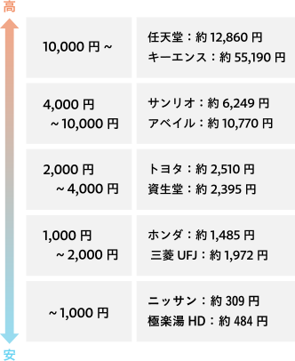

● 株主の立場

株主は、会社にお金を出して応援している人。その会社の未来を信じて「出資」しているわけだから、会社から見ると“オーナーの一員”という立場になります。
そのため、株主には次のような「権利」があります。
・会社の大切な方針について話し合う「株主総会」に参加できる
・株主総会で提案された議案に対して賛成・反対の意思表示をできる（議決権）
・会社の利益や活動を知るための情報を見ることができる
● 保有株数と議決権の関係
そのため、株主には次のような「権利」があります。
・会社の大切な方針について話し合う「株主総会」に参加できる
・株主総会で提案された議案に対して賛成・反対の意思表示をできる（議決権）
・会社の利益や活動を知るための情報を見ることができる
● 保有株数と議決権の関係
会社の決まりごとは、多くの場合「投票」で決まります。一般的に、株主は保有する株式1株につき1票の議決権を持ちます。（1株1議決権の原則）
たとえば…
・1株 → 1票
・100株 → 100票
・1万株 → 1万票
というように、たくさん株を持っている人ほど、会社の方針に対して強い発言力をもてるようになります。
たとえば…
・1株 → 1票
・100株 → 100票
・1万株 → 1万票
というように、たくさん株を持っている人ほど、会社の方針に対して強い発言力をもてるようになります。
● 株価の目安 （ 25年7月17日現在 )

● 「売買単位（単元株）」にも注意！
株を買うときは、ほとんどの会社が「売買単位」を設けています。たとえば、「100株単位」と決まっていれば、100株まとめて買わないといけません。
つまり、1株が2,000円の株なら、「2,000円 × 100株 ＝ 20万円」が最低購入金額ということになります。
ほとんどの上場企業は「100株単位」が基本なので、1社に投資するには、10万円〜30万円ほど必要になるケースが多いです。
最近では、ネット証券などで「1株から買えるサービス」も広がってきました。少額から始めてみたい人には、そうしたサービスもおすすめです。
株を買うときは、ほとんどの会社が「売買単位」を設けています。たとえば、「100株単位」と決まっていれば、100株まとめて買わないといけません。
つまり、1株が2,000円の株なら、「2,000円 × 100株 ＝ 20万円」が最低購入金額ということになります。
ほとんどの上場企業は「100株単位」が基本なので、1社に投資するには、10万円〜30万円ほど必要になるケースが多いです。
最近では、ネット証券などで「1株から買えるサービス」も広がってきました。少額から始めてみたい人には、そうしたサービスもおすすめです。
● 少しの株でも、大切な一歩
たとえば、1株や数株しか持っていなくても、あなたはその会社を応援する「株主」です。会社がどんなことをしているのかを知るきっかけになったり、社会や経済の動きに関心を持てるようになったりします。
つまり、株を持つということは、会社とのつながりができるということ。それだけでも、学べることや感じられることはたくさんあるのです。
たとえば、1株や数株しか持っていなくても、あなたはその会社を応援する「株主」です。会社がどんなことをしているのかを知るきっかけになったり、社会や経済の動きに関心を持てるようになったりします。
つまり、株を持つということは、会社とのつながりができるということ。それだけでも、学べることや感じられることはたくさんあるのです。
中級編では、株を購入するときのコツをより詳しくお話します。専門的なお話が増えてくるので、焦らずゆっくり学んでいきましょうね。